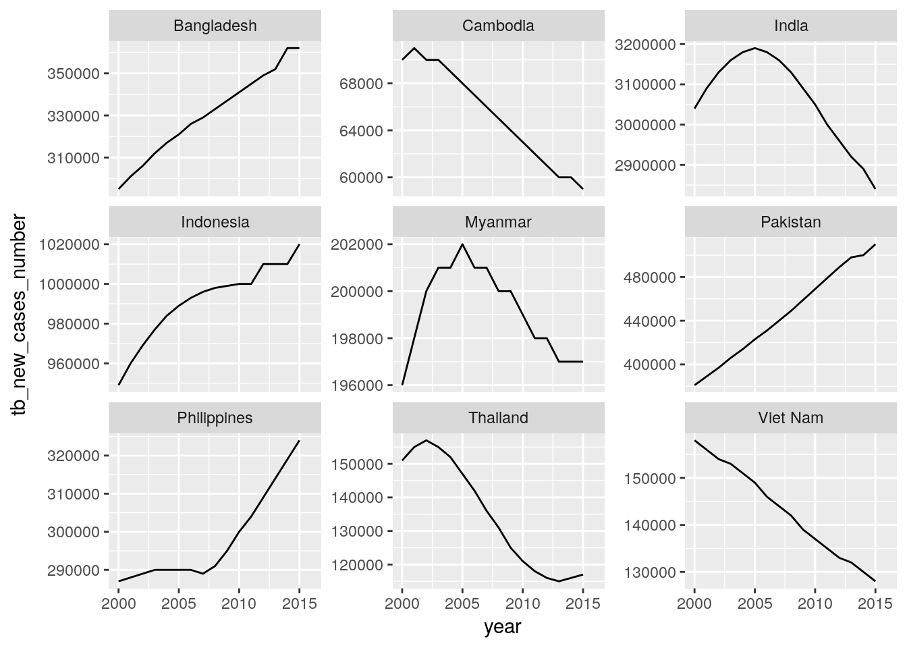

Trend data
Kirill Müller
October 20, 2017
Assignment 1
library(gfdata)
all_stats %>%
filter(five_regions == "High Impact Asia") %>%
ggplot(aes(x = year, y = hiv_new_infections_number)) +
geom_line() +
facet_wrap(~country, scales = "free_y")
all_stats %>%
filter(five_regions == "High Impact Asia") %>%
ggplot(aes(x = year, y = tb_new_cases_number)) +
geom_line() +
facet_wrap(~country, scales = "free_y")## Warning: Removed 1 rows containing missing values (geom_path).
all_stats %>%
filter(five_regions == "High Impact Asia") %>%
ggplot(aes(x = year, y = malaria_new_cases_number)) +
geom_line() +
facet_wrap(~country, scales = "free_y")## Warning: Removed 1 rows containing missing values (geom_path).
Assignment 2
library(gfdata)
all_stats_new_cases_long <-
all_stats %>%
rename(hiv_new_cases_number = hiv_new_infections_number) %>%
select(
five_regions, country, year,
ends_with("_new_cases_number")
) %>%
gather(indicator, count, -five_regions, -country, -year) %>%
separate(
indicator,
into = c("disease", "indicator"),
extra = "merge"
) %>%
mutate(disease = recode(
disease,
"tb" = "TB", "malaria" = "Malaria", "hiv" = "HIV"
)) %>%
mutate(disease = forcats::fct_inorder(disease)) %>%
spread(indicator, count)all_stats_new_cases_long %>%
filter(five_regions == "High Impact Asia") %>%
ggplot(aes(x = year, y = new_cases_number)) +
geom_line() +
facet_grid(country~disease, scales = "free")## Warning: Removed 1 rows containing missing values (geom_path).
Assignment 3
library(gfdata)
all_stats_new_cases_long %>%
group_by(five_regions, year, disease) %>%
summarize(new_cases_number = sum(new_cases_number, na.rm = TRUE)) %>%
ungroup %>%
ggplot(aes(x = year, y = new_cases_number)) +
geom_line() +
facet_grid(five_regions~disease, scales = "free")
Assignment 5
library(gfdata)
all_stats_grouped_inc_mort_long <-
all_stats %>%
rename(hiv_new_cases_number = hiv_new_infections_number) %>%
rename(hiv_deaths_number = aids_deaths_number) %>%
group_by(five_regions, country) %>%
mutate(lag_population_excluding_plwha = lag(population_excluding_plwha) * 100) %>%
group_by(five_regions, year) %>%
summarize(
hiv_incidence = sum(hiv_new_cases_number, na.rm = TRUE) / sum(lag_population_excluding_plwha, na.rm = TRUE),
hiv_mortality = sum(hiv_deaths_number, na.rm = TRUE) / sum(population_all_ages, na.rm = TRUE) * 100,
tb_incidence = sum(tb_new_cases_number, na.rm = TRUE) / sum(population_all_ages, na.rm = TRUE) * 100000,
tb_mortality = sum(tb_deaths_number, na.rm = TRUE) / sum(population_all_ages, na.rm = TRUE) * 100000,
malaria_incidence = sum(malaria_new_cases_number, na.rm = TRUE) / sum(population_at_malaria_risk, na.rm = TRUE) * 1000,
malaria_mortality = sum(malaria_deaths_number, na.rm = TRUE) / sum(population_at_malaria_risk, na.rm = TRUE) * 1000
) %>%
ungroup() %>%
select(
five_regions, year,
ends_with("_incidence"),
ends_with("_mortality")
) %>%
gather(indicator, count, -five_regions, -year) %>%
filter(is.finite(count)) %>%
separate(
indicator,
into = c("disease", "indicator"),
extra = "merge"
) %>%
mutate(disease = recode(
disease,
"tb" = "TB", "malaria" = "Malaria", "hiv" = "HIV"
)) %>%
mutate(disease = forcats::fct_inorder(disease)) %>%
spread(indicator, count)library(gfdata)
all_stats_grouped_inc_mort_long %>%
ggplot(aes(x = year, y = mortality)) +
geom_line() +
facet_grid(five_regions~disease, scales = "free")
Copyright © 2017 Kirill Müller. Licensed under CC BY-NC 4.0.